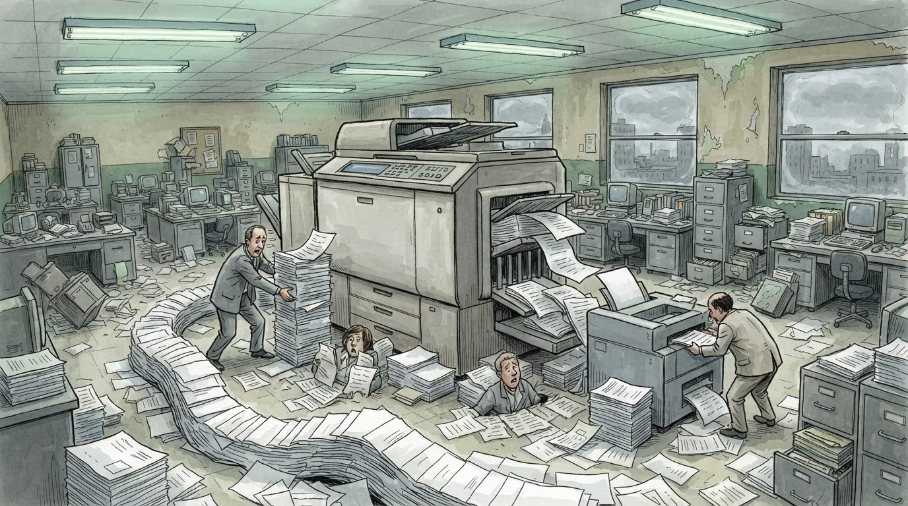

Politikë
Gazeta Satirike e Kosovës dhe Shqipërisë — lajme që nuk duhet t'i besoni, por i lexoni gjithsesi
Krahasimi rajonal tregon Shqipërinë në vend të parë për pagat e magjistraturës. Redaksia jonë llogarit sa "të drejtë" del një llogari kur e bën vetë ai që përfiton.
Kryeministri publikoi një krahasim rajonal të pagave të gjyqtarëve: "një gjykatës fillestar sot në Shqipëri merr 500 Euro pagë më të lartë se sa kolegu në Greqi... paga duhet të rritet 2000 Euro më shumë në muaj se sa kolegu grek". Sipas tabelës, paga mesatare e magjistratit shqiptar arrin 4.886 euro/muaj — më e larta në rajon.
Departamenti ynë i matematikës juridike (një kalkulator me tastin "=" të ngjitur përhershëm dhe një kodeks penal i përdorur si mbështetëse gote) konfirmon se ekziston një formulë e re, e patjetërsueshme: kur dikush llogarit vetë pagën e vet, rezultati del gjithmonë "objektivisht i drejtë".
"Ne nuk e rritëm pagën tonë — thjesht zbatuam formulën", na tha një burim gjyqësor anonim, ndërsa redaksia jonë vërente se formula, çuditërisht, kurrë s'del në minus.
"Drejtësia është e verbër, por llogaritjen e pagës e bën me sy hapur, dhe me kalkulator të ri." — një magjistrat anonim, ndërsa firmoste vendimin me penën e vet të artë
Sipas llogaritjeve tona (një peshore drejtësie e çekuilibruar dhe një faturë page e printuar dy herë), çdo krahasim rajonal i pagave prodhon mesatarisht 1 deklaratë "të tmerrshme" nga qeveria, 2 debate televizive dhe 0 ndryshim real në formulën vetë-miratuese.
Ndërkohë, zyra jonë e klasifikimeve rajonale vëren se Shqipëria ka kapërcyer Rumaninë me një diferencë prej "plus 1.221 euro" — një shifër që sipas nesh dëshmon se formula juridike njeh vetëm një drejtim: lart.
Deri në krahasimin e ardhshëm rajonal, redaksia jonë rekomandon që çdo qytetar të provojë të njëjtën formulë me pagën e vet — statistikisht, s'ka asnjë garanci që funksionon njësoj për të gjithë.